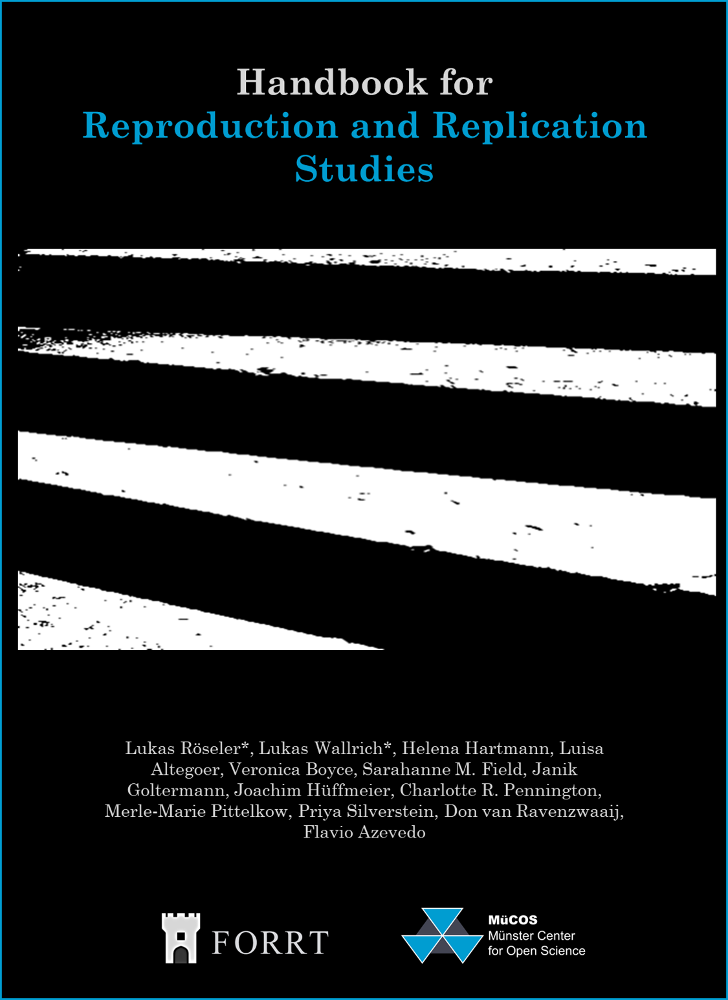
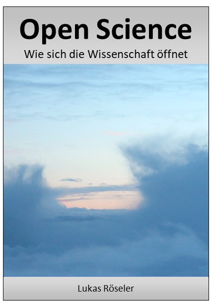

<script>var RT_DATA = [{"_":43,"topic":"Meta-Science","ref":"Aczel, B., Szaszi, B., Clelland, H.T. et al. Investigating the analytical robustness of the social and behavioural sciences. Nature 652, 135–142 (2026). https://doi.org/10.1038/s41586-025-09844-9","oatype":"Gold (APCs: 10,850€)","materials":"https://osf.io/ed8pj/overview","prereg":"","preprint":"https://osf.io/preprints/metaarxiv/twqsv_v1","student":"no","num":""},{"_":42,"topic":"Replication","ref":"Tondlekar, R., Wallrich, L., Weinerova, J., Fouilloux, A., Baldoni, C., Meier, M., Flores Kanter, P. E., Paiva Trajano, I., Vaidis, D. C., Müller, M., Arriaga Ferreira, P., Coulson, H., Röseler, L., & FORRT. (2026). Zotero Replication Checker (0.1.12). Zenodo. https://doi.org/10.5281/zenodo.18671300","oatype":"Software","materials":"https://forrt.org/flora_zotero/","prereg":"","preprint":"","student":"yes","num":""},{"_":41,"topic":"Publishing","ref":"Müller, M., Röseler, L., & Wallrich, L. (2025). Initial Editorial Assessment Form (Replication Research) (1.0). Zenodo. https://doi.org/10.5281/zenodo.17911973","oatype":"Preprint","materials":"https://doi.org/10.5281/zenodo.17911973","prereg":"Does not apply.","preprint":"https://doi.org/10.5281/zenodo.17911973","student":"yes","num":""},{"_":40,"topic":"Meta-Science","ref":"Röseler, L. (2025, November 24). Preregistrations without Code do not Prevent P-Hacking. MetaArxiv. https://doi.org/10.31222/osf.io/v259t_v1 ","oatype":"Preprint","materials":"","prereg":"","preprint":"https://doi.org/10.31222/osf.io/v259t_v1 ","student":"no","num":""},{"_":39,"topic":"Replication","ref":"Röseler, L., Wallrich, L., Adler, S., Back, M., Busch, N., Dienlin, T., Evans, T. R., Goltermann, J., Hartmann, H., Horstmann, J., Korbmacher, M., Oppong Boakye, P., Richter, H., Richter, M., Silverstein, P., Steltenpohl, C. N., Syed, M., Vaidis, D., Verheyen, S., … Azevedo, F. (2025). Replication Research: Journal Description (R2 Launch). Zenodo. https://doi.org/10.5281/zenodo.17241396","oatype":"Preprint","materials":"","prereg":"","preprint":"https://doi.org/10.5281/zenodo.17241396","student":"no","num":""},{"_":38,"topic":"Replication","ref":"Röseler, L., Wallrich, L., Adler, S., Evans, T. R., Goltermann, J., Gut, U., Korbmacher, M., Oppong Boakye, P., Verheyen, S., Visser, I., & Azevedo, F. (2025). Replication Research Constitution (R2 Launch). Zenodo. https://doi.org/10.5281/zenodo.17279413","oatype":"Preprint","materials":"","prereg":"","preprint":"https://doi.org/10.5281/zenodo.17279413","student":"no","num":""},{"_":37,"topic":"Replication","ref":"Röseler, L., Wallrich, L., Adler, S., Oppong Boakye, P., Evans, T. R., Goltermann, J., Haven, T., Horstmann, J., Korbmacher, M., Müller, M., Verheyen, S., Visser, I., & Azevedo, F. (2025). A Community Model for Rigorous and Inclusive Scholarship: Inaugural Editorial of Replication Research (R2). Replication Research, 1. https://doi.org/10.17879/replicationresearch-2025-9022","oatype":"Diamond","materials":"","prereg":"","preprint":"","student":"no","num":""},{"_":36,"topic":"Anchoring","ref":"Rebholz, T. R., Groß, J., & Röseler, L. (2025, June 24). Assimilation to External Cues: Comparing the Reliability of Anchoring Effects, Advice Taking, and Hindsight Bias and Exploring its Determinants. https://doi.org/10.31234/osf.io/5u8br_v1","oatype":"Preprint","materials":"https://osf.io/4n3am/","prereg":"tbd","preprint":"https://osf.io/preprints/psyarxiv/5u8br_v1","student":"no","num":""},{"_":35,"topic":"Replication","ref":"Röseler, L., Moser, V., Schüller, S., & Förster, C. (2025, Mai 22). Replication Research Symposium: Book of Abstracts. Replication Research Symposium (R2S), Münster, Germany. https://doi.org/10.5281/zenodo.15487804","oatype":"Preprint","materials":"https://osf.io/meetings/R2SYMPOSIUM/","prereg":"","preprint":"https://doi.org/10.5281/zenodo.15487804","student":"yes","num":""},{"_":34,"topic":"Replication","ref":"Reed, W. R., Röseler, L., Saam, M., Wallrich, L. (2025). No Room at the Inn? The Case for Specialized Replication Journals. Working Papers in Economics 25/10, University of Canterbury, Department of Economics and Finance. https://www.wiso.uni-hamburg.de/forschung/forschungslabor/working-papers/pdfs-wp/wp88.pdf","oatype":"Gold (APC: 3060 USD)","materials":"","prereg":"","preprint":"https://www.wiso.uni-hamburg.de/forschung/forschungslabor/working-papers/pdfs-wp/wp88.pdf","student":"no","num":""},{"_":33,"topic":"Other","ref":"Hoghe, J., Röseler, L., Limmer, R., Walther, C., & Schütz, A. (2025). Die Bedeutung personaler Ressourcen und personaler Risikofaktoren für die Bewältigung beruflicher Belastungen bei Genesungsbegleiter/-innen/Peer Berater/-innen. In Zeitschrift für Arbeitswissenschaft. https://doi.org/10.1007/s41449-025-00460-x ","oatype":"Gold (APC: 2790.00€)","materials":"https://osf.io/kypnd/","prereg":"https://osf.io/5fm8u","preprint":"","student":"no","num":""},{"_":32,"topic":"Other","ref":"Hoghe, J., Röseler, L., Limmer, R., Walther, C., & Schütz, A. (2024). Berufliche Stressoren und Ressourcen von Genesungsbegleiter* innen/Peer-Berater* innen in der Sozialpsychiatrie. Psychiatrische Praxis. https://doi.org/10.1055/a-2383-8057","oatype":"Closed","materials":"https://osf.io/kypnd/","prereg":"https://osf.io/5fm8u","preprint":"","student":"no","num":""},{"_":31,"topic":"Replication","ref":"Röseler, L. (2024). CODECHECK certificate 2024-005. Zenodo. https://doi.org/10.5281/zenodo.13945051","oatype":"Preprint","materials":"https://github.com/codecheckers/sample-size-codecheck","prereg":"","preprint":"https://doi.org/10.5281/zenodo.13945051","student":"no","num":""},{"_":30,"topic":"Replication / Anchoring","ref":"Röseler, L., Bögler, H. L., Koßmann, L., Krueger, S., Bickenbach, S., Bühler, R., della Guardia, J., Köppel, L.-M. A, Möhring, J., Ponader, S., Roßmaier, K., Sing, J. (2024). Need for Cognition, Cognitive Load, and Forewarning do not Moderate Anchoring Effects. A Replication Study of Epley & Gilovich (Journal of Behavioral Decision Making, 2005; Psychological Science, 2006). Journal of Comments and Replications in Economics, 3(2024-6). https://doi.org/10.18718/81781.38","oatype":"Diamond","materials":"https://osf.io/prwu6/","prereg":"https://osf.io/8k9nt/\nhttps://osf.io/b7nt8/\nhttps://osf.io/f5sj8/","preprint":"https://doi.org/10.31234/osf.io/bgp3m","student":"yes","num":""},{"_":29,"topic":"Anchoring","ref":"Röseler, L., Weber, L., Helgerth, K. A., Stich, E., Günther, M., Tegethoff, P., Wagner, F.-S., & Schütz, A. (2024). Measurements of Susceptibility to Anchoring are Unreliable: Meta-Analytic Evidence From More Than 50,000 Anchored Estimates. Meta-Psychology, 8. https://doi.org/10.15626/MP.2022.3236","oatype":"Diamond","materials":"https://osf.io/ygnvb/","prereg":"","preprint":"https://doi.org/10.31234/osf.io/b6t35","student":"yes","num":""},{"_":28,"topic":"Replication / Meta-Analysis","ref":"Röseler, L., Kaiser, L., Doetsch, C., Klett, N., Seida, C., Schütz, A., Aczel, B., Adelina, N., Agostini, V., Alarie, S., Albayrak-Aydemir, N., Aldoh, A., Al-Hoorie, A. H., Azevedo, F., Baker, B. J., Barth, C. L., Beitner, J., Brick, C., Brohmer, H., Chandrashekar, S. P., Chung, K. L., Cockcroft, J. P., Cummins, J., Diveica, V., Dumbalska, T., Efendic, E., Elsherif, M., Evans, T., Feldman, G., Fillon, A., Förster, N., Frese, J., Genschow, O., Giannouli, V., Gjoneska, B., Gnambs, T., Gourdon-Kanhukamwe, A., Graham, C. J., Hartmann, H., Haviva, C., Herderich, A., Hilbert, L. P., Holgado, D., Hussey, I., Ilchovska, Z. G., Kalandadze, T., Karhulahti, V.-M., Kasseckert, L., Klingelhöfer-Jens, M., Koppold, A., Korbmacher, M., Kulke, L., Kuper, N., LaPlume, A., Leech, G., Lohkamp, F., Lou, N. M., Lynott, D., Maier, M., Meier, M., Montefinese, M., Moreau, D., Mrkva, K., Nemcova, M., Oomen, D., Packheiser, J., Pandey, S., Papenmeier, F., Paruzel-Czachura, M., Pavlov, Y. G., Pavlović, Z., Pennington, C. R., Pittelkow, M.-M., Plomp, W., Plonski, P. E., Pronizius, E., Pua, A. A., Pypno-Blajda, K., Rausch, M., Rebholz, T. R., Richert, E., Röer, J. P., Ross, R., Schmidt, K., Skvortsova, A., Sperl, M. F. J., Tan, A. W. M., Thürmer, J. L., Tołopiło, A., Vanpaemel, W., Vaughn, L. A., Verheyen, S., Wallrich, L., Weber, L., Wolska, J. K., Zaneva, M., & Zhang, Y. (2024). The Replication Database: Documenting the Replicability of Psychological Science. Journal of Open Psychology Data, 12: 8, pp. 1--23. https://doi.org/10.5334/jopd.101","oatype":"Gold (APC: 450 pounds)","materials":"https://osf.io/bzx2q/","prereg":"","preprint":"https://doi.org/10.31222/osf.io/me2ub","student":"yes","num":""},{"_":27,"topic":"Replication","ref":"Röseler, L., Felser, G., Asberger, J., & Schütz, A. (2024). The Effect of Variety on Perceived Quantity: Failures to Replicate Redden and Hoch (2009). Meta-Psychology, 8. https://doi.org/10.15626/MP.2020.2639","oatype":"Diamond","materials":"https://osf.io/9s4w7","prereg":"","preprint":"https://doi.org/10.31234/osf.io/v643q","student":"yes","num":""},{"_":26,"topic":"Anchoring / Meta-Analysis","ref":"Röseler, L., Weber, L., Helgerth, K., Stich, E., Günther, M., Tegethoff, P., Wagner, F. S., Ambrus, E., Antunovic, M., Barrera-Lemarchand, F., Halali, E., Ioannidis, K., Genschow, O., McKay, R., Milstein, N., Molden, D. C., Papenmeier, F., Pavlovic, Z., Rinn, R., Schreiter, M. L., Zimdahl, M. F., Allen, E., Bahník, Š., Bermeitinger, C., Blower, F. B. N., Bögler, H. L., Burgmer, P., Cheek, N. N., Dorsch, L., Fels, S. A., Frech, M.-L., Freira, L., Harris, A. J. L., Hartig, B., Häusser, J. A., Hedgebeth, M. V., Henkel, M., Horvath, D., Imhoff, R., Intelmann, P., Klamar, A., Knappe, E., Köppel, L.-M., Krueger, S. M., Lagator, S., López Bóo, F., Navajas, J., Norem, J. K., Novak, J., Onuki, Y., Page, E., Pearton, J., Ponader, S., Rebholz, T. R., Rostekova, A., Sartorio, M., Schindler, S., Seida, C., Shanks, D. R., Siems, M.-C., Speekenbrink, M., Stäglich, P., Starkulla, M., Stitz, M., Straube, T., Thies, K., Thum, E., Ueda, K., Undorf, M., Urlichich, D., Vadillo, M. A., Wolf, H., Zhou, A., & Schütz, A. (2024). Correction: The Open Anchoring Quest Dataset: Anchored Estimates from 96 Studies on Anchoring Effects. Journal of Open Psychology Data, 12: 8, pp. 1--3. https://doi.org/10.5334/jopd.92","oatype":"Gold (no APCs)","materials":"Does not apply.","prereg":"Does not apply.","preprint":"Does not apply.","student":"yes","num":""},{"_":25,"topic":"Meta-Science / Meta-Analysis","ref":"Adler, S. J., Röseler, L., & Schöniger, M. K. (2023). A toolbox to evaluate the trustworthiness of published findings. Journal of Business Research, 167, 114189. https://doi.org/10.1016/j.jbusres.2023.114189","oatype":"Closed","materials":"https://osf.io/tqgw4/","prereg":"","preprint":"https://doi.org/10.1016/j.jbusres.2023.114189","student":"no","num":""},{"_":24,"topic":"Anchoring / Meta-Analysis","ref":"Röseler, L., Weber, L., Helgerth, K., Stich, E., Günther, M., Tegethoff, P., Wagner, F., Antunovic, M., BarreraLemarchand, F., Halali, E., Ioannidis, K., Genschow, O., Milstein, N., Molden, D. C., Papenmeier, F., Pavlovic, Z., Rinn, R., Schreiter, M. L., Zimdahl, M. F., Bahník, Š., Bermeitinger, C., Blower, F. B. N., Bögler, H. L., Burgmer, P., Cheek, N. N., Dorsch, L., Fels, S., Frech, M.-L., Freira, L., Harris, A. J. L., Häusser, J. A., Hedgebeth, M. V., Henkel, M., Horvath, D., Intelmann, P., Klamar, A., Knappe, E., Köppel, L.-M., Krueger, S. M., Lagator, S., Lopez-Boo, F., Navajas, J., Norem, J. K., Novak, J., Onuki, Y., Page, E., Rebholz, T. R., Sartorio, M., Schindler, S., Shanks, D. R., Siems, M.-C., Stäglich, P., Starkulla, M., Stitz, M., Straube, T., Thies, K., Thum, E., Ueda, K., Undorf, M., Urlichich, D., Vadillo, M. A., Wolf, H., Zhou, A., & Schütz, A. (2022). The Open Anchoring Quest Dataset: Anchored Estimates from 96 Studies on Anchoring Effects. Journal of Open Psychology Data, 10(16), pp. 1--12. http://doi.org/10.5334/jopd.67","oatype":"Gold (APC: 450 pounds)","materials":"https://osf.io/ygnvb/","prereg":"","preprint":"https://doi.org/10.31234/osf.io/b6t35","student":"yes","num":""},{"_":23,"topic":"Meta-Science","ref":"Delios, A., Clemente, E., Wu, T., Tan, H., Wang, Y., Gordon, M., Viganola, D., Chen, Z., Dreber, A., Johannesson, M., Pfeiffer, T., Generalizability Tests Forecasting Collaboration, & Uhlmann, E.L. (2022). Examining the context sensitivity of research findings from archival data. Proceedings of the National Academy of Sciences. https://doi.org/10.1073/pnas.2120377119","oatype":"Gold (APC: approx. 5300 - 5800 USD)","materials":"","prereg":"","preprint":"","student":"no","num":""},{"_":22,"topic":"Meta-Analysis","ref":"Körner*, R., Röseler*, L., Schütz, A., & Bushman, B. J. (2022). Dominance and prestige: Meta-analytic review of experimentally induced body position effects on behavioral, self-report, and physiological dependent variables.Psychological Bulletin, 148(1-2), 67--85. https://doi.org/10.1037/bul0000356 *shared first authorship","oatype":"Closed","materials":"https://osf.io/vz4a6/","prereg":"https://osf.io/cx2q3","preprint":"","student":"no","num":""},{"_":21,"topic":"Replication","ref":"Wolf, D., Leder, J., Röseler, L., & Schütz, A. (2021). Does Facial Redness Really Affect Emotion Perception? Evidence for Limited Generalisability of Effects of Facial Redness on Emotion Perception in a Large Sample. Cognition and Emotion. 35(8), 1607--1617. https://doi.org/10.1080/02699931.2021.1979473","oatype":"Closed","materials":"https://osf.io/4xqet/","prereg":"https://osf.io/2gpn9","preprint":"","student":"no","num":""},{"_":20,"topic":"Replication / Anchoring","ref":"Röseler, L., Schütz, A., Blank, P. A., Dück, M., Fels, S., Kupfer, J., Scheelje, L., & Seida, C. (2021). Evidence against subliminal anchoring: Two close, highly powered, preregistered, and failed replication attempts. Journal of Experimental Social Psychology, 92, 104066. https://doi.org/10.1016/j.jesp.2020.104066","oatype":"Closed","materials":"https://osf.io/96de2/","prereg":"https://osf.io/qxwhv\nhttps://osf.io/8urxv","preprint":"","student":"yes","num":""},{"_":19,"topic":"Self-Control","ref":"Röseler, L., Ebert, J., Schütz, A., & Baumeister, R. F. (2021). The upsides and downsides of high self-control: Evidence for effects of similarity and situation dependency. Europe's Journal of Psychology, 17(1), 1--16. https://doi.org/10.5964/ejop.2639","oatype":"Diamond","materials":"","prereg":"","preprint":"","student":"yes","num":""},{"_":18,"topic":"Meta-Analysis","ref":"Körner, R., Röseler, L., & Schütz, A. (2021). Commentary on Elkjær et al.'s (2020) meta-analysis on expansive versus contractive nonverbal displays.Perspectives on Psychological Science, 17(1), 305--307. https://doi.org/10.1177/1745691620984474","oatype":"Closed","materials":"Does not apply.","prereg":"Does not apply.","preprint":"","student":"no","num":""},{"_":17,"topic":"Meta-Science / Replication","ref":"Tierney, W., Hardy, J. H., III., Ebersole, C., Viganola, D., Clemente, E., Gordon, M., Hoogeveen, S., Haaf, J., Dreber, A.A., Johannesson, M., Pfeiffer, T., Chapman, H., Gantman, A., Vanaman, M., DeMarree, K., Igou, E., Wylie, J., Storbeck J., Andreychik, M.R., McPhetres, J., Vaughn, L.A., ... Röseler, L., ...Uhlmann, E. L.(2021). A creative destruction approach to replication: Implicit work and sex morality across cultures. Journal of Experimental Social Psychology, 93, 104060. https://doi.org/10.1016/j.jesp.2020.104060","oatype":"Gold (APCs: approx. 3070 USD)","materials":"https://osf.io/t79v8/","prereg":"https://osf.io/xwu4v","preprint":"","student":"no","num":""},{"_":16,"topic":"Replication / Self-Control","ref":"Röseler, L., Schütz, A., Baumeister, R. F., & Starker, U. (2020). Does ego depletion reduce judgment adjustment for both internally and externally generated anchors? Journal of Experimental Social Psychology, 87, 103942. https://doi.org/10.1016/j.jesp.2019.103942","oatype":"Closed","materials":"https://osf.io/2c75d/","prereg":"https://osf.io/97gaf","preprint":"","student":"no","num":""},{"_":15,"topic":"Meta-Science","ref":"Landy, J. F., Jia, M. L., Ding, I. L., Viganola, D., Tierney, W., Dreber, A., Johannesson, M., Pfeiffer, T., Ebersole, C. R., Gronau, Q. F., Ly, A., van den Bergh, D., Marsman, M., Derks, K., Wagenmakers, E.-J., Proctor, A., Bartels, D. M., Bauman, C. W., Brady, W. J.,... Röseler, L., ... Uhlmann, E. L. (2020). Crowdsourcing hypothesis tests: Making transparent how design choices shape research results. Psychological Bulletin, 146(5), 451--479. https://doi.org/10.1037/bul0000220","oatype":"Closed","materials":"https://osf.io/9jzy4/","prereg":"https://osf.io/tac5u","preprint":"Link","student":"no","num":""},{"_":14,"topic":"Anchoring / Meta-Analysis","ref":"Röseler, L. (2020, September). Anchoring Effects: Resolving the Contradictions of Personality Moderator Research (Doctoral Thesis). University of Bamberg. https://osf.io/34sv6","oatype":"Diamond","materials":"https://osf.io/9gju4/","prereg":"","preprint":"https://osf.io/34sv6","student":"no","num":""},{"_":13,"topic":"Replication / Assimilation & Contrast","ref":"Röseler, L., Doetsch, C. A., Förster, N., Bruzsa, A., Deublein, M., Rieger, E., Schmidt, C., Seitz, A., & Wild, A. (2024). No Evidence for the Affective Expectation Model: Replication of Geers and Lassiter (2003). https://doi.org/10.31234/osf.io/akfzh","oatype":"Preprint","materials":"https://osf.io/rge23/","prereg":"https://osf.io/kx5gw","preprint":"https://doi.org/10.31234/osf.io/akfzh","student":"no","num":""},{"_":12,"topic":"Assimilation & Contrast","ref":"Röseler, L. (2024). Exploring Categorical Colors. https://doi.org/10.31234/osf.io/gj76p","oatype":"Preprint","materials":"https://osf.io/86zv9/","prereg":"","preprint":"https://doi.org/10.31234/osf.io/gj76p","student":"no","num":""},{"_":11,"topic":"Assimilation & Contrast","ref":"Röseler, L., & Schütz, A. (2024). Assimilation and Contrast are Everywhere. https://doi.org/10.31234/osf.io/krwcn","oatype":"Preprint","materials":"Does not apply.","prereg":"Does not apply.","preprint":"https://doi.org/10.31234/osf.io/krwcn","student":"no","num":""},{"_":10,"topic":"Meta-Science / Meta-Analysis","ref":"Röseler, L. (2023). Predicting Replication Rates with Z-Curve: A Brief Exploratory Validation Study Using the Replication Database. https://osf.io/preprints/metaarxiv/ewb2t","oatype":"Preprint","materials":"https://osf.io/k4d6w/","prereg":"","preprint":"https://osf.io/preprints/metaarxiv/ewb2t","student":"no","num":""},{"_":9,"topic":"Anchoring","ref":"Röseler, L., Incerti, L., Rebholz, T. R., Seida, C., & Papenmeier, F. (2025). Falsifying the insufficient adjustment model: No evidence for unidirectional adjustment from anchors. Meta-Psychology, 9. https://doi.org/10.15626/MP.2024.4137","oatype":"Diamond","materials":"https://osf.io/8cwpy","prereg":"https://osf.io/c2ynz\nhttps://osf.io/56vte\nhttps://osf.io/3qu6b\nhttps://osf.io/yhrua","preprint":"https://doi.org/10.31234/osf.io/jztk2","student":"yes","num":""},{"_":8.5,"topic":"Open Scholarship","ref":"Röseler, L., Carbon, C., & Schütz, A. (2023, January 24). Stellungnahme zum Positionspapier der Psychologie-Fachschaften-Konferenz (PsyFaKo e.V.) zum Thema Autor*innenschaft. https://doi.org/10.31234/osf.io/cbkzp","oatype":"Preprint","materials":"https://osf.io/gkhbt/","prereg":"Does not apply.","preprint":"https://doi.org/10.31234/osf.io/cbkzp","student":"No","num":""},{"_":8,"topic":"Replication / Meta-Analysis","ref":"Röseler, L., Gendlina, T., Krapp, J., Labusch, N., & Schütz, A. (2022). Successes and Failures of Replications: A Meta-Analysis of Independent Replication Studies Based on the OSF Registries. https://doi.org/10.31222/osf.io/8psw2","oatype":"Preprint","materials":"https://osf.io/9r62x/","prereg":"https://osf.io/4yce7","preprint":"https://doi.org/10.31222/osf.io/8psw2","student":"yes","num":""},{"_":7,"topic":"Anchoring / Meta-Analysis","ref":"Weber, L., & Röseler, L. (2025). Testing the Reliability of Anchoring Susceptibility Scores. Europe’s Journal of Psychology, 21(1), 1-10. https://doi.org/10.5964/ejop.9891","oatype":"Diamond","materials":"https://osf.io/sz5b9/","prereg":"https://osf.io/4aev5","preprint":"https://doi.org/10.31234/osf.io/2kfh3","student":"yes","num":""},{"_":6,"topic":"Replication","ref":"Wolf, D., Röseler, L., Leder, J., & Schütz, A. (2022). The Red-Anger Effect: Is it Nothing More Than Demand Characteristics? https://doi.org/10.31234/osf.io/ntukz","oatype":"Preprint","materials":"https://osf.io/7ezvb/","prereg":"https://osf.io/7pw4c/\nhttps://osf.io/caf6h/","preprint":"https://doi.org/10.31234/osf.io/ntukz","student":"no","num":""},{"_":5,"topic":"Anchoring / Meta-Analysis","ref":"Röseler, L., & Schütz, A. (2022). Hanging the Anchor Off a New Ship: A Meta-Analysis of Anchoring Effects. https://doi.org/10.31234/osf.io/wf2tn","oatype":"Preprint","materials":"https://osf.io/4t5mu/","prereg":"","preprint":"https://doi.org/10.31234/osf.io/wf2tn","student":"no","num":""},{"_":4,"topic":"Assimilation & Contrast","ref":"Röseler, L., Schütz, A. (2021). What You Expect is What You Get: The Role of Affective Expectations in Real-World Experiences. https://doi.org/10.31219/osf.io/2tr6q","oatype":"Preprint","materials":"https://osf.io/hzcuf/","prereg":"https://osf.io/9qz3d\nhttps://osf.io/5bfwg\nhttps://osf.io/jhycr\nhttps://osf.io/7eq93\nhttps://osf.io/d83mf","preprint":"https://doi.org/10.31219/osf.io/2tr6q","student":"no","num":""},{"_":3,"topic":"Anchoring","ref":"Röseler, L., Schütz, A., Dolling, I. K., Friedinger, K., Hösch, Y., Hügel, J. C., Igna, E., Karg, A., Kühling, S., Schäffer, D., Zhou, A., & Röseler, J. J. (2020). The Stepwise Anchoring Paradigm: Measuring Reliable Components of Anchoring and Adjustment as the Next Step in Moderator Research. https://doi.org/10.31234/osf.io/hjbwp","oatype":"Preprint","materials":"https://osf.io/fjxmw/","prereg":"https://osf.io/7r3da\nhttps://osf.io/5ua98","preprint":"https://doi.org/10.31234/osf.io/hjbwp","student":"yes","num":""},{"_":2,"topic":"Meta-Science","ref":"Röseler, L., Wolf, D., Leder, J., & Schütz, A. (2020). Test-Retest Reliability is not a Measure of Reliability or Stability: A Friendly Reminder. https://doi.org/10.31234/osf.io/mt49r","oatype":"Preprint","materials":"https://osf.io/jvrn5/","prereg":"Does not apply.","preprint":"https://doi.org/10.31234/osf.io/mt49r","student":"no","num":""},{"_":1,"topic":"Anchoring / Replication","ref":"Röseler, L., Schütz, A., & Starker, U. (2019). Cognitive Ability does not and cannot Correlate with Susceptibility to Anchoring Effects. https://doi.org/10.31234/osf.io/bnsx2","oatype":"Preprint","materials":"https://osf.io/n8d6v/","prereg":"https://osf.io/4s2pe","preprint":"https://doi.org/10.31234/osf.io/bnsx2","student":"no","num":""}];
document.addEventListener("DOMContentLoaded", rtRender);
</script>Research
Key topics based on Google Scholar profile
My research covers Replications, Meta-Science, and Judgment and Decision Making (e.g., Anchoring Effects).
Open Educational Resources

Handbook for Reproduction & Replication Studies
Open access handbook co-authored with international experts. Covers methods, standards, and best practices for replication research.
Read online

Open Science: Wie sich die Wissenschaft öffnet
A German-language open access book on Open Science — freely available online and continuously updated.
Read online

Interdisciplinary Open Science Guide (MueCOS)
An interdisciplinary guide to Open Science prepared with experts from the University of Münster. German, work in progress.
Open guide
Workshops, Lectures & Teaching Slides
Slides and materials from workshops, lectures, talks, and seminars on Open Science and replication methods. Hosted on OSF.
Browse OSF repository
Research Articles (Peer-Reviewed)
Aczel, B., Szaszi, B., Clelland, H.T. … Röseler, L., … et al. Investigating the analytical robustness of the social and behavioural sciences. Nature 652, 135–142 (2026). https://doi.org/10.1038/s41586-025-09844-9
Röseler, L., Incerti, L., Rebholz, T. R., Seida, C., & Papenmeier, F. (2025). Falsifying the insufficient adjustment model. Meta-Psychology, 9. https://doi.org/10.15626/MP.2024.4137
Reed, W. R., Röseler, L., Saam, M., & Wallrich, L. (2025). No Room at the Inn? The Case for Dedicated Replication Journals. Journal of Behavioral and Experimental Economics, 102502. https://doi.org/10.1016/j.socec.2025.102502
Hoghe, J., Röseler, L., Limmer, R., Walther, C., & Schütz, A. (2025). Die Bedeutung personaler Ressourcen. Zeitschrift für Arbeitswissenschaft. https://doi.org/10.1007/s41449-025-00460-x
Weber, L., & Röseler, L. (2025). Testing the Reliability of Anchoring Susceptibility Scores. Europe’s Journal of Psychology, 21(1), 1-10. https://doi.org/10.5964/ejop.9891
Röseler, L., Weber, L., Helgerth, K. A., Stich, E., Günther, M., Tegethoff, P., Wagner, F., & Schütz, A. (2024). Measurements of Susceptibility to Anchoring are Unreliable. Meta-Psychology, 8. https://doi.org/10.15626/MP.2022.3236
Hoghe, J., Röseler, L., et al. (2024). Berufliche Stressoren und Ressourcen von Genesungsbegleiterinnen. Psychiatrische Praxis.* https://doi.org/10.1055/a-2383-8057
Röseler, L., Bögler, H. L., et al. (2024). Need for Cognition, Cognitive Load, and Forewarning do not Moderate Anchoring Effects. Journal of Comments and Replications in Economics, 3(2024-6). https://doi.org/10.18718/81781.38
Röseler, L., Kaiser, L., Doetsch, C., et al. (2024). The Replication Database. Journal of Open Psychology Data, 12: 8, pp. 1–23. https://doi.org/10.5334/jopd.101
Röseler, L., Felser, G., Asberger, J., & Schütz, A. (2024). The Effect of Variety on Perceived Quantity. Meta-Psychology, 8. https://doi.org/10.15626/MP.2020.2639
Röseler, L., Weber, L., Helgerth, K., et al. (2024). Correction: The Open Anchoring Quest Dataset. Journal of Open Psychology Data, 12: 8, pp. 1–3. https://doi.org/10.5334/jopd.92
Adler, S. J., Röseler, L., & Schöniger, M. K. (2023). A toolbox to evaluate the trustworthiness of published findings. Journal of Business Research, 167, 114189. https://doi.org/10.1016/j.jbusres.2023.114189
Röseler, L., Weber, L., Helgerth, K., et al. (2022). The Open Anchoring Quest Dataset. Journal of Open Psychology Data, 10(16), pp. 1–12. http://doi.org/10.5334/jopd.67
Delios, A., Clemente, E., Wu, T., et al. (2022). Examining the context sensitivity of research findings. PNAS. https://doi.org/10.1073/pnas.212037711
Körner*, R., Röseler*, L., Schütz, A., & Bushman, B. J. (2022). Dominance and prestige. Psychological Bulletin, 148(1-2), 67–85. https://doi.org/10.1037/bul0000356
Wolf, D., Leder, J., Röseler, L., & Schütz, A. (2021). Does Facial Redness Really Affect Emotion Perception? Cognition and Emotion, 35(8), 1607–1617. https://doi.org/10.1080/02699931.2021.1979473
Röseler, L., Schütz, A., Blank, P. A., et al. (2021). Evidence against subliminal anchoring. Journal of Experimental Social Psychology, 92, 104066. https://doi.org/10.1016/j.jesp.2020.104066
Röseler, L., Ebert, J., Schütz, A., & Baumeister, R. F. (2021). The upsides and downsides of high self-control. Europe’s Journal of Psychology, 17(1), 1–16. https://doi.org/10.5964/ejop.2639
Körner, R., Röseler, L., & Schütz, A. (2021). Commentary on Elkjær et al.’s (2020) meta-analysis. Perspectives on Psychological Science, 17(1), 305–307. https://doi.org/10.1177/1745691620984474
Tierney, W., Hardy, J. H., III., Ebersole, C., et al. (2021). A creative destruction approach to replication. Journal of Experimental Social Psychology, 93, 104060. https://doi.org/10.1016/j.jesp.2020.104060
Röseler, L., Schütz, A., Baumeister, R. F., & Starker, U. (2020). Does ego depletion reduce judgment adjustment? Journal of Experimental Social Psychology, 87, 103942. https://doi.org/10.1016/j.jesp.2019.103942
Landy, J. F., Jia, M. L., Ding, I. L., et al. (2020). Crowdsourcing hypothesis tests. Psychological Bulletin, 146(5), 451–479. https://doi.org/10.1037/bul0000220
Röseler, L. (2020). Anchoring Effects: Resolving the Contradictions of Personality Moderator Research (Doctoral Thesis). University of Bamberg. https://osf.io/34sv6
Research Articles (Preprints)
- Wallrich, L., vaz, K. G., Weinerova, J., Röseler, L., et al. (2026). FLoRA-Notify. https://doi.org/10.31222/osf.io/qnckf_v1
- Rebholz, T. R., Groß, J., & Röseler, L. (2026). Assimilation to External Cues. https://doi.org/10.31234/osf.io/5u8br_v3
- Hartmann, H., Azevedo, F., Röseler, L., et al. (2025). Tracking and mainstreaming replications. https://doi.org/10.31222/osf.io/ad2w6_v2
- Röseler, L. (2025). Preregistrations without Code do not Prevent P-Hacking. https://doi.org/10.31222/osf.io/v259t_v1
- Röseler, L. (2024). CODECHECK certificate 2024-005. https://doi.org/10.5281/zenodo.13945051
- Röseler, L., Doetsch, C. A., Förster, N., et al. (2024). No Evidence for the Affective Expectation Model. https://doi.org/10.31234/osf.io/akfzh
- Röseler, L. (2024). Exploring Categorical Colors. https://doi.org/10.31234/osf.io/gj76p
- Röseler, L., & Schütz, A. (2024). Assimilation and Contrast are Everywhere. https://doi.org/10.31234/osf.io/krwcn
- Röseler, L. (2023). Predicting Replication Rates with Z-Curve. https://osf.io/preprints/metaarxiv/ewb2t
- Röseler, L., Gendlina, T., et al. (2022). Successes and Failures of Replications. https://doi.org/10.31222/osf.io/8psw2
- Wolf, D., Röseler, L., Leder, J., & Schütz, A. (2022). The Red-Anger Effect. https://doi.org/10.31234/osf.io/ntukz
- Röseler, L., & Schütz, A. (2022). Hanging the Anchor Off a New Ship. https://doi.org/10.31234/osf.io/wf2tn
- Röseler, L., Schütz, A. (2021). What You Expect is What You Get. https://doi.org/10.31219/osf.io/2tr6q
- Röseler, L., Schütz, A., Dolling, I. K., et al. (2020). The Stepwise Anchoring Paradigm. https://doi.org/10.31234/osf.io/hjbwp
- Röseler, L., Wolf, D., Leder, J., & Schütz, A. (2020). Test-Retest Reliability. https://doi.org/10.31234/osf.io/mt49r
- Röseler, L., Schütz, A., & Starker, U. (2019). Cognitive Ability does not Correlate with Anchoring Susceptibility. https://doi.org/10.31234/osf.io/bnsx2
Books and Book Chapters
- Röseler, L.*, Wallrich, L.*, Hartmann, H., et al. (2025). Handbook for Reproduction and Replication Studies. https://forrt.org/replication_handbook
- Röseler, L. (2025). Open Science: Wie sich die Wissenschaft öffnet (0.2). https://doi.org/10.17605/OSF.IO/2QXWV
- Jané, M., Xiao, Q., Yeung, S., et al. (2024). Guide to Effect Sizes and Confidence Intervals. http://dx.doi.org/10.17605/OSF.IO/D8C4G
- Röseler, L., & Schütz, A. (2022). Open Science. In Psychologie: Eine Einführung (6th ed., pp. 187–198). Kohlhammer.
Editorial Activities
- Röseler, L., Wallrich, L., Adler, S., et al. (2025). Inaugural Editorial of Replication Research (R2). Replication Research, 1. https://doi.org/10.17879/replicationresearch-2025-9022
- Müller, M., Röseler, L., & Wallrich, L. (2025). Initial Editorial Assessment Form. Zenodo. https://doi.org/10.5281/zenodo.17911973
- Röseler, L., Wallrich, L., Adler, S., et al. (2025). Replication Research Constitution. Zenodo. https://doi.org/10.5281/zenodo.17279413
- Röseler, L., Wallrich, L., Adler, S., et al. (2025). Replication Research: Journal Description. Zenodo. https://doi.org/10.5281/zenodo.17241396
Software
- Tondlekar, R., Wallrich, L., et al. (2026). Zotero Replication Checker (0.1.12). https://doi.org/10.5281/zenodo.18671300
- Röseler, L., Wallrich, L. (2024). FReD: Interfaces to the FORRT Replication Database. http://forrt.org/FReD/
- Röseler, L., Kaiser, L., et al. (2024). ReD: Replication Database, Version 0.4.22. https://dx.doi.org/10.17605/OSF.IO/9r62x
- Röseler, L., Weber, L., et al. (2022). OpAQ: Open Anchoring Quest, Version 1.1.42.94. https://dx.doi.org/10.17605/OSF.IO/YGNVB
- Röseler, L., Adler, S., Schöniger, M. (2022). A Toolbox to Identify P-Hacking. https://metaanalyses.shinyapps.io/toolbox/
- Röseler, L., Körner, R., & Schütz, A. (2021). Dynamic Meta-Analysis of Body Position Effects. https://metaanalyses.shinyapps.io/bodypositions/
- Röseler, L., Röseler, J. J. (2020). Studienfeedback ShinyApp. https://l-air.shinyapps.io/feedback/
Research Proposals
| Proposal | Year | Role | Program & Funder | Link | Status |
|---|---|---|---|---|---|
| Moderators of Anchoring Effects | 2022 | First author | DFG, Sachbeihilfe | osf.io/x6bqh | Rejected |
| Formation of a Replication Journal | 2024 | First author | Topical Program, Uni Münster | osf.io/9vgx7 | Accepted |
| Diamond Open Access Journal Support | 2024 | First author | openaccess.nrw | osf.io/a82fe | Accepted |
| Diamond OA Journal (expression of interest) | 2025 | First author | ZBW Olecon | — | Rejected |
| Expanding the Replication Database | 2023 | First author | Ideenlabor, Uni Münster | osf.io/854vt | Rejected |
| Expanding the FORRT Replication Database | 2024 | Second author | DFG, Meta-REP | — | Rejected |
| University-wide Open Science Strategy | 2024 | Second author | Road2Openness, Stifterverband | — | Rejected |
| Making Replications Count | 2024 | Co-Investigator | UKRI | — | Accepted |
| Breaking the Wall of the Urge for Innovation | 2025 | Shared first author | Falling Walls Lab Münster | osf.io/f486v | Rejected |
Invited Talks
- Röseler, L. (2025, July). Building your career on solid ground. Keynote, 1st Oldenburg Open Science Conference. https://osf.io/u7f2e
- Röseler, L. (2025, May). Panelist, Future of Open Science. SIPS online 2025. https://www.youtube.com/watch?v=MpLbeLTcw6E
- Röseler, L. (2025, March). The FORRT Replication Hub. RWI Essen. https://osf.io/9fkw7
- Röseler, L. (2024, November). Die FORRT Replication Hub. TU Dortmund. https://osf.io/g3wke
- Röseler, L. (2024, September). Creating the Münster Center for Open Science. Mannheim. https://osf.io/ha46c
- Röseler, L. (2024, August). Open Science als Annäherung. Open Access NRW. https://osf.io/sv9xw
- Röseler, L. (2022, August). How to resist anchoring? Seeburg Castle University, Austria.
- Röseler, L. (2022, June). The Open Anchoring Quest. Leuphana University, Lüneburg.
- Röseler, L. (2022, April). Die Open Science Bewegung in der Psychologie. Harz University.
- Röseler, L. (2020, August). Auflösung der Widersprüche aus Ankereffekt-Forschung. University of Magdeburg.
Presentations
- Röseler, L. (2026). Replication Journal Showcase: R2. Love Replications Week. https://doi.org/10.5281/zenodo.18864153
- Röseler, L. (2026). Getting your replication report ready. LRW, Online. https://doi.org/10.5281/zenodo.18757230
- Röseler, L. (2025). Metascience won’t solve the replication crisis. Metascience online 2025. https://osf.io/zq2rc
- Röseler, L. (2025). We cannot solve the replication crisis without replications. SIPS 2025. https://osf.io/xat5s
- Röseler, L. (2025). Das Münster Center for Open Science. CDSC Colloquium. https://osf.io/hwbf6
- Röseler, L. (2024). Die Bedeutung von Replikationen. Philosophy of Science Lecture Series. https://osf.io/zexb7
- Röseler, L. (2024). The FORRT Replication Database. DGPs-Kongress. https://osf.io/wec8t
- Röseler, L. (2024). Creating a Nexus for Replication Research. Year of Open Science Conference. https://osf.io/n5vae
- Röseler, L., Wallrich, L., & Bushman, B. J. (2023). Creating interactive ShinyApps for Meta-Analyses. ESMARConf. https://www.youtube.com/watch?v=yRmjBBiE2Io
Posters
- Röseler, L., Moser, V., & Oppong Boakye, P. (2026). Münster Center for Open Science. Zenodo. https://doi.org/10.5281/zenodo.18537522
- Hoghe, J., Röseler, L., et al. (2022). Die sozialpsychiatrische Versorgungsorganisation. DKVF. https://doi.org/10.3205/22dkvf185
- Röseler, L., et al. (2020). Tidying up the Anchoring Shelf. 62nd Conference of Experimental Psychologists. https://doi.org/10.13140/RG.2.2.24734.89928/1
Workshop and Conference Materials
- Röseler, L. (2026). Love Replications Week, online. https://forrt.org/LoveReplicationsWeek/
- Röseler, L. (2025). Workshop on Open Science as a Career Asset. CER, Münster. https://osf.io/g7yz4
- Röseler, L., Moser, V., Schüller, S., & Förster, C. (2025). Replication Research Symposium: Book of Abstracts. https://doi.org/10.5281/zenodo.15487804
- Röseler, L., & Hätscher, O. (2025). Opening up your research with OSF and Github. FDM-Werkstatt. https://osf.io/gwkfm
- Röseler, L. (2024). Workshop on Preregistration, CER Münster. https://osf.io/64teq
Blog Posts & Science Communication
- Q&A for COS Blog: “Building a Publishing Model for Replication.” https://www.cos.io/blog/building-a-publishing-model-for-replication-qa-with-the-senior-editors-of-replication-research
- Interview for Laborjournal. “Wiederholung wird gesellschaftsfähig.” https://www.laborjournal.de/editorials/3363.php
- Interview for University of Münster Newsportal. “Das System ist nicht auf Wiederholungen ausgelegt.” https://www.uni-muenster.de/news/view.php?cmdid=15002&lang=de
- Interview for Nature Index. “No more hunting for replication studies.” https://doi.org/10.1038/d41586-024-02598-w
- Interview on FORRT’s activities for the ZBW. https://open-science-future.zbw.eu/en/forrt-open-science-initiative/
- Blog post on the FORRT Replication Hub, The Replication Network. https://replicationnetwork.com/2025/02/08/roseler-replication-research-symposium-and-journal/
Research Articles — Searchable Table
Filter by topic, search by author or title. Click any row to expand full details and open science badges.
Topic
| # | Topic | Reference | OA Type | Open Science |
|---|